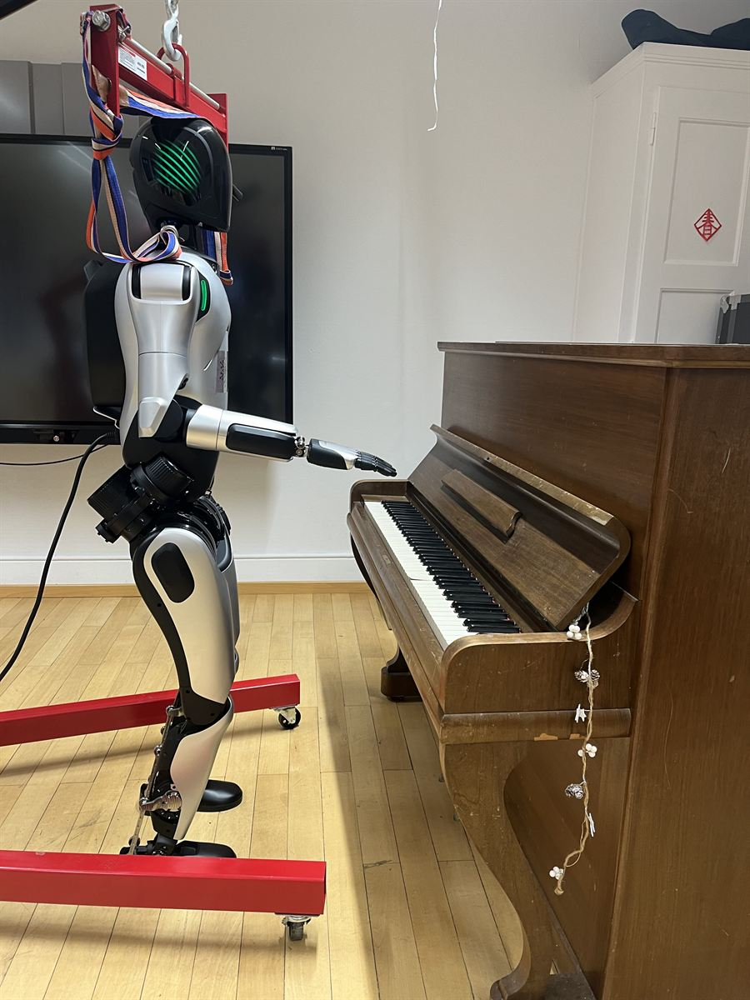
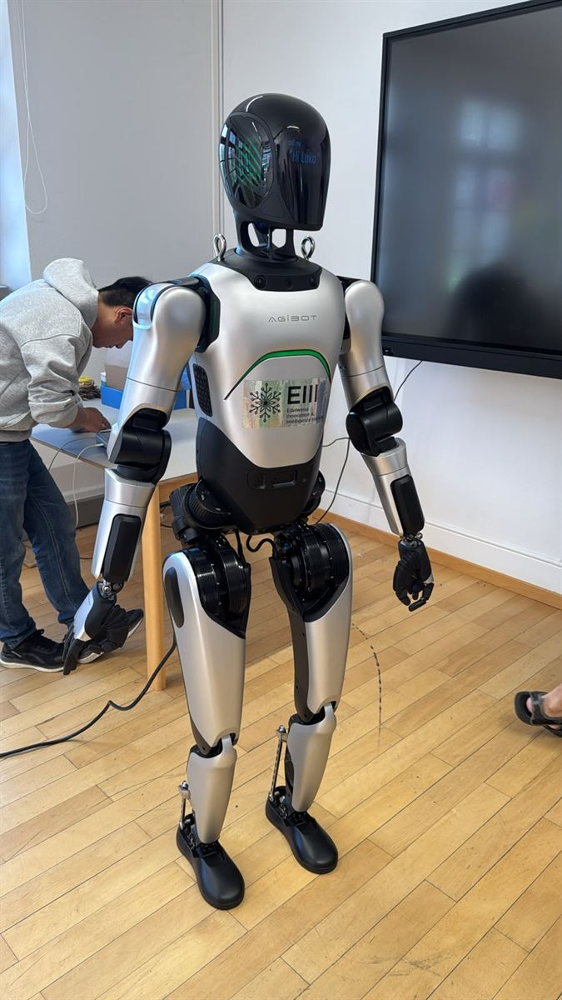

Leukerbad, Switzerland · August 2026
A ten-day robotics retreat hosted by Edelweiss Innovation & Intelligence Institute (EIII) AG in Leukerbad, where a multidisciplinary team designed and built the Piano Maestro Robot on site — a system that goes from a score to keys actually being pressed.
My contribution focused on …

